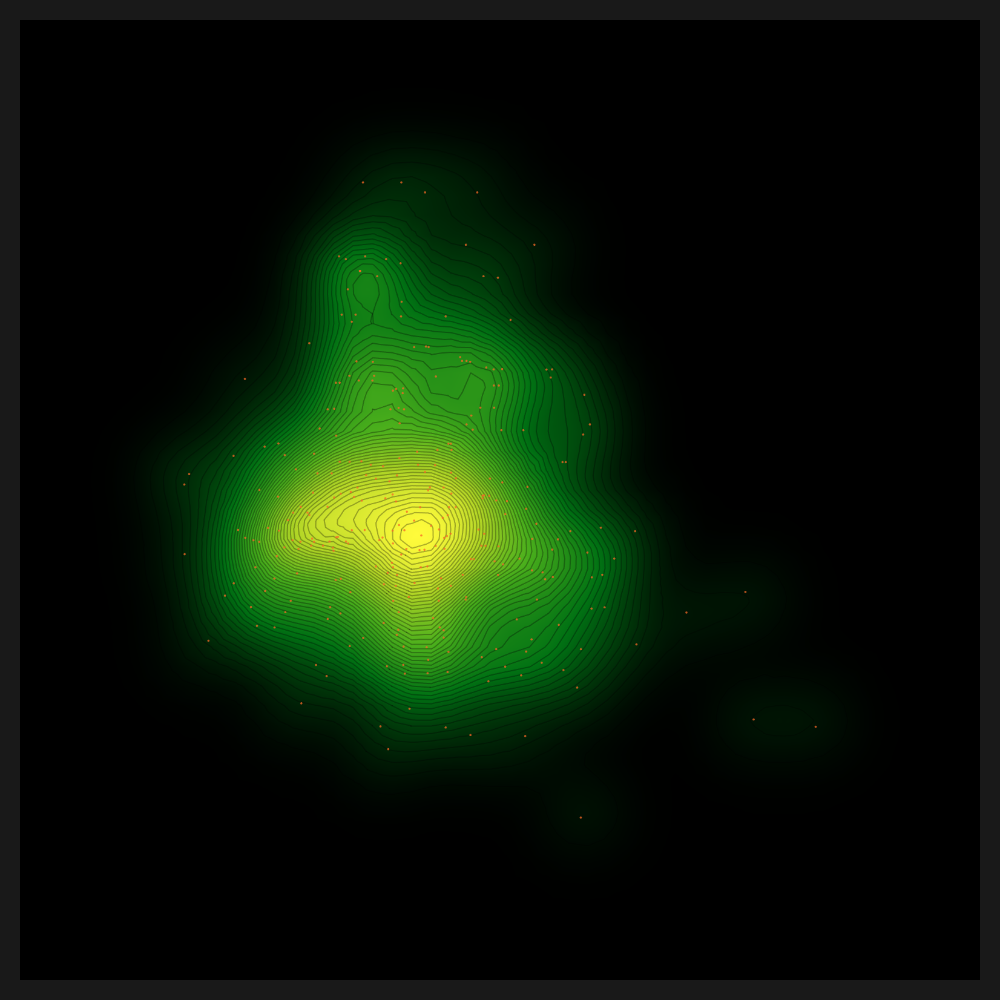

Executive Summary
There was an engine that ran zero lines. automatic-config is the diagnostic engine Pebblous built while developing DataGreenhouse under the AADS project — our team's internal core asset, the Data Clinic engine. As the reasonable choice of a team that built a fast, working engine first, it had been written to fit the in-house setup it grew up in: a single NVIDIA GPU and a running vLLM server on an internal company machine. An Apple Silicon Mac has none of those three. We decided to bring our own engine back to life on a Mac, from the first line to the last. The destination was a density map of a single bean leaf — a picture that lets you see data quality with your own eyes.
There were twelve places where it stopped. We did not route around any of them. At each wall the rule was the same: one commit, one fix, always at the root. The deepest wall turned out to be the simplest. What had collapsed the entire density map was a single .cuda() line buried in a helper script. We changed that one line to be device-aware (cuda → mps → cpu), and the map came back.
This is a success story told with restraint. It records the idea that turned hardcoding not into something to delete but into a backend you can route, the way that idea makes an engine vendor-neutral, and the leftovers we are honest enough to still name. More than anything, it is a record of what it means to re-read our own team's engine and carry it to a sovereign place where it runs anywhere.
By the numbers
M5 Max / 128GB / macOS, 2026-06-07. Source: Pebblous Data Clinic local reproduction.
12 walls
1 commit = 1 fix
Each cleared by a root fix, never a workaround
1.9 → 46
embedding img/s (MPS)
device-aware switched the CPU path to Apple Silicon GPU
3 layers
vendor-neutral routing
perception, reasoning, analysis swappable by env
299
bean-leaf samples → density map
An engine that ran zero lines finished a real diagnostic chart
Editor's note. Why bother reviving our own engine — the one Pebblous built while developing DataGreenhouse under the AADS project — on a Mac? The reason came from strategy, not sales. The data diagnosis that DataClinic performs has to run in the customer's environment, and that environment is not always an NVIDIA cluster. It can be an on-prem server in a regulated industry, or a sovereign setting where data cannot leave the building. For a diagnosis to reach places where data can never leave the customer's walls, sovereign and on-prem operation is the direction Pebblous has to take. Only by running our own engine end to end with our own hands do we get a measured blueprint for making AADS run anywhere. This article is that first measurement.
The engine that ran zero lines
What we had in hand was not a document but running code. automatic-config is the diagnostic engine Pebblous built while developing DataGreenhouse under the AADS project, and inside it vision_agent is the actual engine of Pebblous Data Clinic 2.0, with five domains bound into a single pipeline. There is preprocessing, which cleans data and turns it into embeddings; recommendation, which automatically picks the right embedding lens for a given dataset; diagnosis, which measures the shape of the data through density, distance, and N-indicators; and then diet and bulkup, which trim or augment the dataset. "Diagnostic engine" sounds abstract until you reach its end, where a single map renders the density of bean-leaf images.
The engine has two structural traits, and each becomes a porting burden in its own right. One is the dual track: a deterministic graph (StateGraph) that walks the steps in order, sitting alongside a react track where an LLM orchestrates them. The other is the hybrid of languages. Python handles the neural networks and feature extraction; Wolfram (.wl) handles the mathematics of density and geometry, and the chart rendering. Within a single pipeline, Python and Wolfram call each other.
And the device and models were pinned throughout the code — a natural consequence of code written to run fast on the team's in-house GPU setup. A 61GB Qwen2.5-32B was wired in as the reasoning LLM; the role-specific models (VLM, RAG) were fixed as well. The LLM endpoint pointed at a vLLM at localhost:11211, and the device was "cuda" or .cuda() in place after place. There was not a single branch toward MPS. In one line: this was code faithful to the place it was built — "one NVIDIA GPU and a running vLLM on an internal server." Adding a sovereign layer on top of it is the work of this report.
So on a Mac it stopped at the first line. python was not where we wanted it, cuda did not exist, and there was no vLLM listening on port 11211. An engine that ran zero lines. That was the starting point.
The unspoken premise: NVIDIA + vLLM
Read enough code and you learn that the deepest premises are the ones never stated. Nowhere did automatic-config say "this engine only runs on NVIDIA." Yet every line assumed it. A premise seldom arrives as a declaration; it seeps into code as a habit.
The heaviest premise was model size. Even after narrowing the candidates, the reasoning LLM was set to download a separate 61GB Qwen2.5-32B. On a laptop, that one line becomes a wall of disk and download time. Beside it sat the role-specific models (VLM-2B, RAG-meta-7B, RAG-emb-8B), pinned as fixed values. When the choice of model is frozen into the code, the model does not change even when the environment does.
The second premise was the endpoint. The decision LLM called a vLLM at localhost:11211. On a Mac there is nothing on that port, so what comes back is a single line: Connection refused. The third premise ran deepest. The device was "cuda" all over the code, and on a machine without CUDA that line crashes outright, no branch to catch it. The fourth premise was Wolfram. The mathematics of density and geometry lived in Wolfram (.wl) — a proprietary runtime that needs a license and takes about forty seconds to cold-start.
None of these premises deserve blame. To build an engine that runs fast on an internal server, they were reasonable choices. But the moment you move that engine somewhere else, each unspoken premise becomes a wall. Porting, in the end, is the work of questioning again what someone once took for granted.
Twelve walls — root fixes, not workarounds
There were twelve places where it stopped. A way around always existed. We could have dropped a dimension, skipped a step, or covered the gap with a temporary patch. Each time, we chose to fix the root instead. The rule was simple: one commit, one fix. One fix per wall, and a commit message that explained why the fix was a legitimate portability change. The table below is the full account of those twelve walls.
| # | Wall | Symptom | Fix |
|---|---|---|---|
| 1 | 61GB reasoning LLM | Hardcoded Qwen2.5-32B download | env routing (RECOMMEND_REASONING_MODEL) |
| 2 | Hardcoded role models | VLM and RAG models pinned | env routing |
| 3 | hf socket hang | Large model download stalls at 0/N | hf_transfer (Rust downloader) |
| 4 | fork DataLoader deadlock | num_workers>0 clashes on macOS |
num_workers=0 when non-CUDA |
| 5 | MPS unused | Only cuda-or-cpu branch → CPU 1.9 img/s | device-aware mps (15–46 img/s) |
| 6 | OMP libomp triple-load | faiss+torch+sklearn segfault | KMP_DUPLICATE_LIB_OK=TRUE and more |
| 7 | distance/density device="cuda" |
gaussian-rbf path crashes | device-aware |
| 8 | N-indicator index | n_candidates (512>N) loop → missing file |
loop over valid_n |
| 9 | Hardcoded decision LLM at 11211 | Connection refused |
env routing (LM Studio 1234) |
| 10 | Wolfram → python | RunProcess["python"] hits system python |
inject .venv/bin into PATH |
| 11 | feature.mx stale cache | Broken .mx + existence guard blocks rebuild | Delete broken cache, regenerate |
| 12 | norm/nearest_set .cuda() |
Density map x-axis $Failed |
device-aware |
Read the table again and one grain runs through it. More than half of the fixes are the same kind. Either something hardcoded is pulled out into env, or one "cuda" spot is made device-aware. The walls wore different shapes, but their roots were strikingly alike. That likeness leads into the insight of the next section.
One effect showed up clearly in the numbers. At wall 5, before MPS was turned on, embedding ran at 1.9 images per second. Once we opened the device path to Apple Silicon's Metal Performance Shaders, it climbed to between 15 and 46 images per second. Same code, same machine; the only thing that changed was one device branch. On the Mac, the tool stack settled like this. Preprocessing embeddings ran on SigLIP (MPS), the diagnostic feature lens was CLIP, the decision LLM was qwen3.6-35b in LM Studio, the analysis mathematics and charts were Wolfram, and the large-model downloads went through hf_transfer.
The deepest wall — one .cuda() line that broke the density map
Of the twelve walls, the one that held us longest was the last. After the diagnosis had finished, text appeared where the density map should have been. A grid filled with Flatten[$Failed]. In Wolfram, $Failed is the mark for "a computation was attempted but produced no result." The chart was intact; the density inside it was entirely empty.
It was the kind of trail you follow by peeling layers. The density map reads density.mx; density.mx presumes norm.mx; norm.mx leans in turn on feature.mx. Peel that dependency a layer at a time and, at the innermost point, there was a place where norm had simply never been generated. Inside norm.py, the script that builds norm, there was a single line that crashes on macOS — .cuda(). On a machine without CUDA, that one line brought the whole norm computation down, and every density map stacked above it turned to $Failed. The same pattern sat in nearest_set.py, one more line.
The fix was the same as walls 5 and 7: device-aware. Two lines, changed to branch cuda → mps → cpu. Norm came out as it should, and density was computed again on top of it. One line had broken the picture; one line set it back up. Below is the density map that came back to life — evidence the engine survived to the end after starting from zero.

.cuda() line was made device-aware, norm computed correctly and this picture returned. | Source: Pebblous Data Clinic local reproduction, 2026-06-07
That the deepest wall was the simplest line distills the lesson of this work. When a diagnostic chart breaks into $Failed, the cause is rarely a flashy algorithm; more often it is a single hardcoded device line at the tail of a helper script. device-aware is the first task of any port to macOS or to a sovereign environment.
Three-layer routing — turning hardcoding into backends
Only after clearing all the walls did the core insight come into focus. What we had done was not delete the hardcoding. We had generalized it into a backend you can route. We did not erase the 61GB model; we made the model swappable by env. We did not throw away the vLLM endpoint; we made the endpoint something env could point at. A hardcoded value, it turned out, was never a defect. It was a candidate for a routing point.
Seen this way, the engine divides into three layers: perception, reasoning, and analysis. The neural network's perception is close to an eye that reads patterns; the LLM's reasoning adds judgment to those patterns; Wolfram's analysis measures the structure with mathematics and renders it as a picture. Each of the three has exactly one routing point.
| Layer | Role | Routing point | Status |
|---|---|---|---|
| Perception | Python lens — CLIP, SigLIP | model routing (RECOMMEND_*_MODEL) |
Done |
| Reasoning | LLM endpoint — qwen3.6-35b | endpoint routing (LLM_BASE_URL) |
Done |
| Analysis | Wolfram (.wl) math and charts | engine routing (DIAGNOSIS_ENGINE) |
Open (#112) |
Two of the three layers are already vendor-neutral. Perception's model can be chosen by env, and reasoning's LLM endpoint can be pointed at by env. Every Python helper script underneath them now branches device-aware (cuda → mps → cpu). This is the heart of running macOS sovereign. The remaining layer is analysis. Wolfram is both a strength and a burden: it resolves the mathematics of density and geometry with elegance, but as a proprietary runtime it is the heaviest thing to carry into a sovereign setting. Migrating that layer, step by step, to open Python (numpy, scipy, matplotlib) is the last piece of the puzzle, and we filed it as a separate issue (#112).
This three-layer routing is itself the blueprint for porting. If the model, the LLM, and before long the analysis engine can all be swapped by env, then the same engine runs the same way on an NVIDIA cluster, on Apple Silicon, and on an on-prem server in a regulated industry. Below is what that blueprint actually produced: a bean-leaf montage that shows, in a single glance, the dense and the sparse samples in the embedding space.

Hardcoding is not a defect; it is a candidate for a routing point. Resolve the model, the LLM, the device, and the analysis engine one by one through env and routing, and the engine becomes vendor-neutral as it stands. That single sentence is the spine of this reproduction.
A Pebblous perspective — carrying our own engine to a sovereign place
Editor's note. This section is not a feature boast. It is closer to a memo of what came into view while we re-read our own team's engine all the way through and carried it to a sovereign architecture. "Porting it to Pebble Beach," the phrase we use internally, is in the end a commitment: the same diagnosis should run the same way wherever the data lives. For us, sovereign and on-prem are not a nice-to-have property but the strategic direction of carrying the diagnosis into regulated places where data can never leave the customer's environment.
What DataClinic does is measure the health of data. But a diagnosis has to happen where the data lives — all the more so in fields like healthcare, finance, and the public sector, where data cannot leave the building. If our own engine only runs on an NVIDIA cluster, then its diagnosis reaches only the customers whose data can come to that cluster; in sovereign settings where data can never leave the customer's environment, the diagnosis cannot reach at all. Vendor-neutral is not a marketing word. It is a question of how far a diagnosis can reach — and widening that reach into regulated, on-prem ground is Pebblous's strategic direction.
What this reproduction confirmed is that device-aware and routing are the two handles that widen that reach. device-aware keeps the same code from breaking whether it runs on NVIDIA, on Apple Silicon, or on a CPU. Routing lets the model, the LLM, and the analysis engine be swapped to fit the environment. Put the two together, and instead of moving data to where the diagnosis lives, you can bring the diagnosis to where the data lives. The foundation of sovereign AI operations sits right there.
Let us also be clear about what this work touched. We did not build a new algorithm this time. We brought our own team's engine back from a state where it ran zero lines, and in doing so we obtained, by measurement, a map of the port — what needs to be replaced or improved, and through which routing. That map is exactly what AADS and DataClinic need in order to reach more environments. A single bean-leaf density map is the first coordinate on that map.
What remains
From the place we reached, what remains sorts into three: the reproduced environment, the next tasks, and the honest leftovers. The more a story succeeds, the more reason there is to keep that last column from going blank.
7.1The reproduced environment
From preprocessing through recommendation, then the diagnosis CORE, and on to the charts, it ran end to end locally on the Mac. For the recommendation, openai/clip-vit-base-patch32 was selected automatically as the lens that fit the bean-leaf data, and the diagnostic N-indicators came out as n_local=1, n_meso=16, n_global=299. Two kinds of charts actually rendered: the high/low-density bean-leaf montage and the density heatmap. The environment variables needed to reproduce this are below.
KMP_DUPLICATE_LIB_OK=TRUE OMP_NUM_THREADS=1 MKL_NUM_THREADS=1 VECLIB_MAXIMUM_THREADS=1
LLM_BASE_URL=http://localhost:1234/v1 LLM_MODEL=qwen/qwen3.6-35b-a3b LLM_API_KEY=lm-studio
PATH=.venv/bin:$PATH PYTORCH_ENABLE_MPS_FALLBACK=1 HF_HUB_ENABLE_HF_TRANSFER=1
7.2The next tasks
We left the next places marked as two issues. One is #111. The recommendation step rebuilds the candidate-model index on every run; moving that to a prebuilt vector database makes recommendation faster. The other is #112. It is the path of abstracting the analysis layer's Wolfram into routing that env can swap (DIAGNOSIS_ENGINE), then migrating it gradually to open Python. When these two are filled in, all three layers become vendor-neutral.
7.3The honest leftovers
These are not things that blocked us, but things that ran to the end without being fixed. Some combined metrics (gaussian-rbf × linear-cosine and the like) produced empty density, so only the density maps for those metrics remained $Failed; the three base metrics (euclidean, gaussian-rbf, linear-cosine) are fine. The final packaging of pebbloscope ended with status=error. The decision LLM (qwen-35b) connected but dropped to a fallback on some JSON parsing, with no effect on the charts themselves. These three are non-blocking leftovers — the starting point for the next session.
Thank you for reading to the end. This is not a success story written to make noise, but a record of running our own team's engine end to end with our own hands. Each time a line stopped, "keep going" was what brought the bean-leaf density map back. With the same instinct, we mean to carry on the sovereign work of making the engine our AADS effort produced run wherever the data lives.
Pebblous Data Communication Team
June 7, 2026
🏥 DataClinic
We suggest reading this alongside the DataClinic hub — the place that gathers Pebblous's data-quality work on diagnosing the health of data and making that diagnosis possible anywhere.
Frequently Asked Questions (FAQ)
Here are the questions that come up most often about this reproduction. What automatic-config is, why it ran zero lines on a Mac, what device-aware is and why it matters, and what vendor-neutral and sovereign AI mean in operations. The core is one line: hardcoding is not a defect but a candidate for a routing point.
References
Papers
- 1.Zhai, X., Mustafa, B., Kolesnikov, A., & Beyer, L. (2023). "Sigmoid Loss for Language Image Pre-Training." ICCV 2023. arXiv:2303.15343. SigLIP — the preprocessing embedding lens (MPS). arxiv.org/abs/2303.15343
- 2.Radford, A., Kim, J. W., Hallacy, C., & Sutskever, I. (2021). "Learning Transferable Visual Models From Natural Language Supervision." ICML 2021. arXiv:2103.00020. CLIP ViT-B/32 — the diagnostic feature lens (the auto-recommended result). arxiv.org/abs/2103.00020
Tools & Runtime
- 3.PyTorch. (2024). "MPS backend — PyTorch documentation." The Apple Silicon Metal Performance Shaders backend — the device-aware mps path. pytorch.org/docs/stable/notes/mps.html
- 4.Hugging Face. (2023). "hf_transfer — high-performance Rust downloader for the Hugging Face Hub." Resolving the socket hang on large-model downloads (Rust). github.com/huggingface/hf_transfer
- 5.LLVM / Intel OpenMP. (2024). "KMP_DUPLICATE_LIB_OK — Intel OpenMP runtime." The env that avoids the faiss+torch+sklearn libomp triple-load segfault. github.com/llvm/llvm-project/tree/main/openmp
- 6.Wolfram Research. (2024). "Wolfram Engine for Developers." The analysis layer (.wl) — density and geometry mathematics plus chart rendering. wolfram.com/engine/